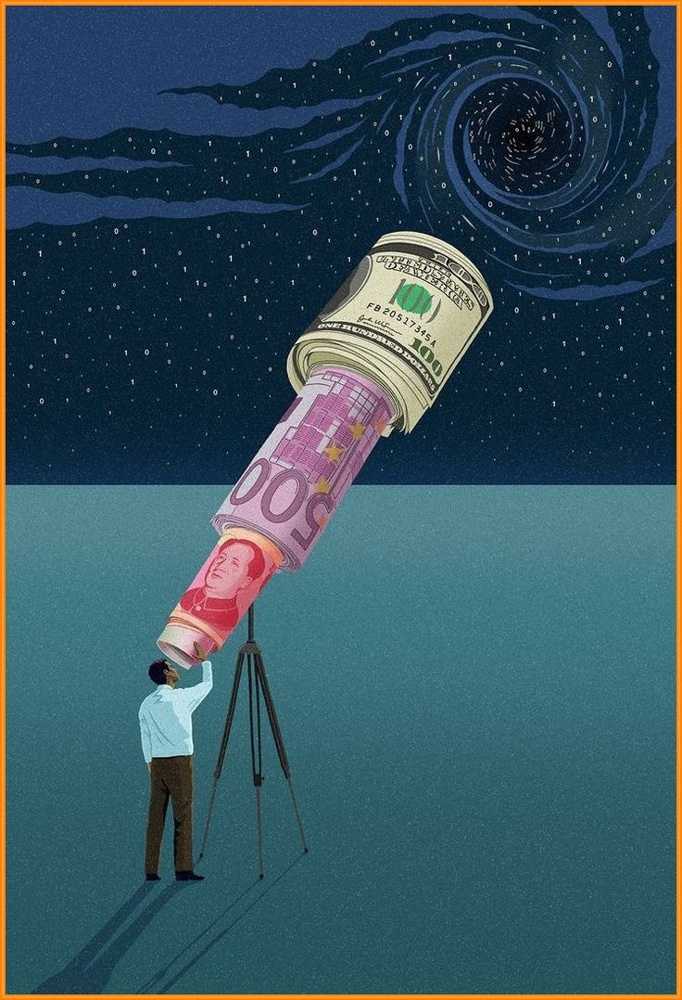

Hay una frase que quedó grabada desde que leí Padre Rico, Padre Pobre: "La mente puede ser el activo más poderoso, o el pasivo más grande."
Robert Kiyosaki: “El apalancamiento no comienza con dinero. Comienza con la mente.”
Una mente entrenada puede aprender, crear, ver oportunidades, resolver problemas y multiplicar resultados. Pero si está guiada por el miedo, la confusión o la inercia, se convierte en el mayor obstáculo.
La educación financiera no es solo comprender tasas de interés o inversiones. Es desarrollar una forma distinta de observar y decidir.
El mejor primer paso no es abrir una cuenta de inversión ni comprar activos. Es comenzar por entender cómo opera la mente en relación al dinero.
“Las personas ricas entrenan su mente. Las personas pobres la apagan.”